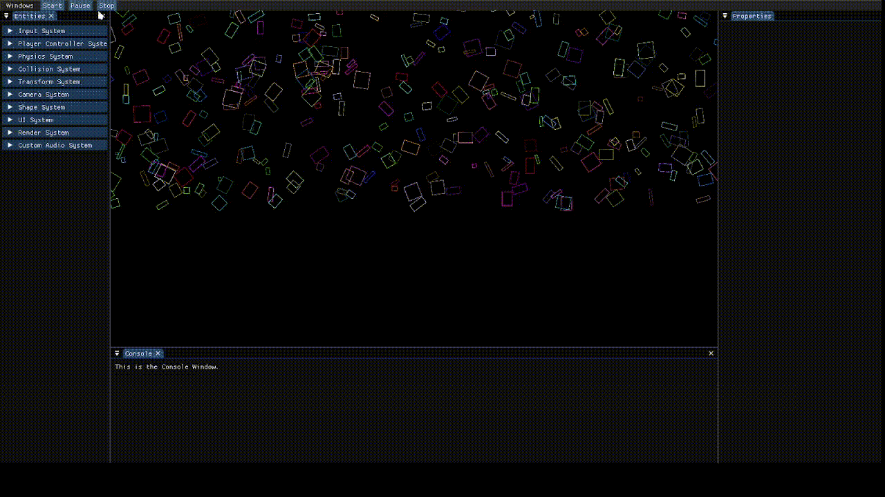

<div id="inner-body">
    <section class="card">
        <div class="header-container">
            <span class="icon" nz-icon nzType="left-circle" nzTheme="outline" [routerLink]="'/coding-portfolio'"></span>
            <h1>
                hot beAn engine
            </h1>
            <div></div>
        </div>
        <p>
            Hot Bean Engine is a versatile C++ game engine I developed with a focus on performance,
            flexibility, and modern architecture principles. Built around a robust Entity Component System (ECS),
            it enables rapid game development while maintaining clean separation between game logic and engine systems.
        </p>
        <p>
            The engine features a modular component-based architecture where game objects are composed
            of various components like physics bodies, colliders, textures, and input controllers.
            This is complemented by a powerful system framework that processes components according to specific signatures.
            This engine includes default, integrated physics (via Box2D), 2D rendering capabilities, event handling, and an intuitive editor
            interface built with ImGui that allows runtime inspection and modification of all game elements.
        </p>
        <p>
            What sets the Hot Bean Engine apart is its balance between performance and usability. The engine implements optimized memory
            layouts with sparse sets for component storage, advanced template metaprogramming for type-safe operations,
            and carefully designed APIs that make game development intuitive without sacrificing flexibility.
            Whether you're creating a simple prototype or a complex game, Hot Bean Engine provides the tools and architecture
            to bring your vision to life efficiently.
        </p>
        <div>
            
        </div>
        <br>
        <p>
            TODO: Add more example gifs, add link to GitHub repo, and add link to doxygen documentation.
        </p>
        <a class="page-link" [routerLink]="'dev-log'"><h2>Poly Solace Dev Log</h2></a>
    </section>
</div>